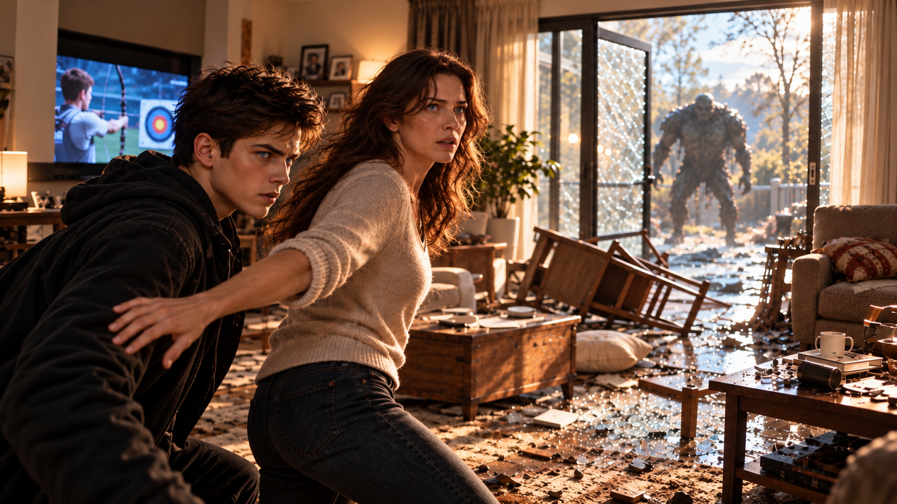

WHITE MAGIC ART STUDIO
第四章
不速之客
大門緩緩打開。
映入眼簾的，是一片狼藉的客廳。
椅子翻倒在地，破碎的杯子散落四處，沙發也被撞得歪斜。唯獨電視仍若無其事地播放著世界射箭錦標賽。
主播興奮的解說聲，在此刻顯得格外荒謬。
瑞秋站在門口，一動也不動。
柴克緊跟在她身後，緊張地望著屋內。
「媽……」
咚。
屋子後方突然傳來一聲悶響。
瑞秋抬起眼睛。
咚。
又是一聲。
鮑勃忍不住從兩人身後探出頭來。
「這到底是——」
一聲低沉的吼叫，打斷了他的話。
三人同時轉頭。
後院門口，那頭怪物回來了。
牠龐大的身軀緩緩從門框後方擠進屋內，灰暗的四肢踏過地板，發出令人不安的聲響。
沒有眼睛。
臉上只有一張裂開般的巨嘴。
鮑勃的臉色瞬間慘白。
「我的天啊……」
柴克下意識地往後退了一步。
「就是牠！」
然而，瑞秋卻沒有後退。
她只是迅速打量了怪物一眼，便轉頭看向兒子。
「柴克。」
「什麼？」
「帶鮑勃上樓。」
柴克愣住。
「……什麼？」
「去克里斯的房間。」

瑞秋的語氣忽然變得異常嚴肅。
「現在。」
柴克難以置信地望著母親。
「媽，妳到底——」
怪物猛然撲了過來！
「趴下！」
瑞秋一把推開柴克與鮑勃。
龐大的身軀從三人剛才站立的位置掠過，狠狠撞上客廳的沙發！
砰！
沙發被撞得翻倒在地，鮑勃也狼狽地跌坐下去。
「那到底是什麼東西？！」
「快起來！」
柴克連忙抓住他的手，將他從地上拉起。
怪物緩緩轉過身。
巨嘴深處傳出低沉的聲響。
牠明明沒有眼睛，卻彷彿知道他們站在哪裡，開始朝三人的方向逼近。
瑞秋迅速瞥了一眼廚房。
「柴克！」
「我知道！上樓嘛！」
「不只！」
瑞秋猛然轉頭，直直望著他。
「到了克里斯的房間之後——」
怪物再次向前踏出一步。
「打開他的電腦。」
柴克一怔。
「……什麼？」
「記住。」
瑞秋的眼神沒有絲毫玩笑的意思。
「不管發生什麼事，一定要打開他的電腦。」
「媽，妳到底在說——」
「快走！」
柴克從來沒有聽過母親用這種語氣對自己說話。
他看了她一眼，終於咬牙拉起鮑勃。
「走！」
兩人轉身衝向樓梯。
怪物立刻追了上去。
瑞秋趁機衝進廚房，猛然拉開最下層的抽屜。
柴克回頭的瞬間，正好看見母親從裡面拿出一把手槍。
他的腳步差點停住。
「媽？涅？！」
砰！
槍聲猛然響起，震得整棟房子彷彿都跟著顫動。
怪物受到攻擊，立刻轉向瑞秋。
她雙手握著槍，目光緊盯眼前的怪物，動作熟練得完全不像第一次使用。
「上樓！」
柴克怔怔地望著母親。
那一瞬間，他突然覺得眼前的人十分陌生。
明明還是那張熟悉的臉，卻像是某個自己從來不認識的人。
「柴克！」
第二聲槍響將他拉回現實。
他終於轉身，拉著鮑勃往樓上狂奔。
砰！
砰！
槍聲不斷從樓下傳來。
柴克衝進克里斯的房間，立刻反手鎖上房門。
鮑勃縮在牆邊，驚魂未定地喘著氣。
「到底發生什麼事了？！你們家為什麼會有那種東西？」
「你問我？」
柴克難以置信地指著自己。
「我今天早上才知道我們家有地下室！」
「地下室？」
「現在不是重點！」
樓下再次傳來一聲巨響。
柴克猛然轉頭，望向房門。
「媽……」
他握住門把，幾乎想立刻衝出去。
然而，母親剛才的叮囑卻再次浮現在腦海。
打開他的電腦。
柴克停下動作。
「電腦……？」
他轉頭望向書桌。
克里斯的筆電正安靜地擺在那裡。
柴克皺起眉頭，慢慢走了過去。
「她到底想要我——」
身後突然傳來一陣笑聲。
很輕。
「呵……」
柴克停住腳步。
「……鮑勃？」
笑聲再次響起。
「呵呵……」
柴克緩緩轉身。
鮑勃仍然蹲在牆邊，肩膀卻不停顫動。
但那不是因為害怕。
他正在笑。
「鮑勃？」
笑聲戛然而止。
男人慢慢抬起頭。
他的聲音變了。
不再是剛才那個驚慌失措的鄰居，而是帶著一種陌生的冷意。
「你真的……」
柴克不由自主地後退一步。
「……你說什麼？」
鮑勃緩緩站起身。
剛才那個嚇得雙腿發軟的男人彷彿憑空消失了。
他歪著頭，饒有興趣地打量柴克。
「真可憐。」
「你……離我遠一點。」
男人沒有理會，反而朝他走近一步。
「自己的爸爸是誰，不知道。」
又一步。
「自己的哥哥是誰，不知道。」
柴克皺起眉頭。
「你到底在說什麼？」
「甚至連自己的媽媽——」
「我叫你站住！」
鮑勃笑了。
「——你都不知道。」
柴克一路後退，直到背部撞上書桌。
「你到底是誰？」
男人沒有回答。
他只是緩緩抬起右手。
下一秒，黑色液體竟從他的指尖滲出，沿著手背不斷向上蔓延。
柴克瞪大眼睛。
「什麼……？」
那張熟悉的臉開始扭曲。
彷彿覆蓋在表面的外殼正在融解，原本的輪廓逐漸失去形狀，黑色液體沿著下顎滴落。
幾秒後，站在柴克面前的，已經不再是鮑勃。
陌生男人活動了一下脖子，露出滿意的笑容。
「舒服多了。」
柴克怔怔地望著他。
「……鮑勃呢？」
男人挑起眉毛。
「這就是你的第一個問題？」
「真正的鮑勃在哪裡？」
「誰知道呢？」
柴克握緊拳頭。
「你這混蛋……」
「別急。」
男人攤開雙手，像是在安撫一個不懂事的孩子。
「我可是花了很久，才終於進到你們家。」
「為什麼？」
「找東西。」
「什麼東西？」
男人的目光緩緩落在柴克身上。
「一把鑰匙。」
柴克心頭猛然一震。
地下書房。
那本奇怪的聖經。
血脈。
鎖鑰。
他下意識地要握住胸前的八角星水晶，但卻赫然發現水晶已經消失……
「……什麼鑰匙？」
男人注意到他的動作，嘴角微微揚起。
「看來，你今天學到了不少東西。」
柴克沒有回答。
「那就簡單多了。」
男人抬起手臂。
黑色液體迅速蔓延，整隻手臂逐漸失去原本的形狀，向前延伸，最後凝固成一道鋒利的黑刃。
柴克的呼吸一滯。
「你想幹嘛……？」
「我只需要一點東西。」
男人緩緩舉起黑刃。
「你的血。」
樓下。
瑞秋再次扣下扳機。
喀。
沒有槍聲。
她迅速確認手中的槍。
子彈已經用盡。
怪物卻仍在步步逼近。
瑞秋沒有時間重新裝填。
眼看怪物再次撲來，她立刻側身閃避，順勢用手中的槍朝牠揮去。
砰！
怪物的頭部被擊得偏向一側。
瑞秋趁機轉身，試圖拉開距離。
然而，怪物的利爪緊接著掃過她身後的櫥櫃。
喀啦！
木板應聲裂開，碎片散落一地。
瑞秋抓起手邊能碰到的東西，不斷阻擋怪物的攻勢。
可是，她很清楚。
這些方法根本無法真正傷害牠。
她能做的，只有拖延時間。
怪物再次撲來！
瑞秋閃避不及，被龐大的身軀撞倒在地。
劇烈的疼痛讓她一時無法起身。
怪物緩緩逼近，巨大的嘴發出低沉的聲響。
瑞秋望著眼前的怪物。
沒有尖叫。
只是下意識地握住胸前的項鍊。
「詹姆斯……」
就在這時——
暖黃色的八角星水晶，忽然亮了起來。
下一秒。
轟！
金色雷光猛然向四周張開！
強大的力量瞬間將怪物震飛，狠狠撞碎了客廳的茶几。
瑞秋怔怔地望著眼前的光芒。
十五年來。
這是第一次。
那顆水晶，竟然再次回應了她。
「怎麼會……？」
她還來不及理解發生了什麼，長時間緊繃的身體便終於失去力量。
瑞秋緩緩倒了下去。
然而，金色雷光並沒有消失。
光芒依舊環繞在她身旁，將她的身體輕輕托起，形成一道保護屏障。
彷彿即使主人已經不在，仍有某個承諾不願就此消失。
怪物從破碎的茶几旁重新站起。
牠發出低沉的吼聲，再次朝瑞秋逼近。
就在這時，玄關突然傳來一個聲音。
「嘿。」
怪物停下動作。
門口站著一名少女。
安娜。
她看見倒在地上的母親，臉上的表情瞬間沉了下來。
「離她遠一點。」
怪物緩緩轉向她。
安娜伸出手。
一道黑色光芒在掌心凝聚，緊接著，金色紋路逐一亮起。
光芒不斷延伸、交錯，最後竟形成一把幾乎與她身高不成比例的雙頭劍。
安娜握住劍柄。
「我今天心情本來就很差。」
她抬起眼睛，冷冷地望向怪物。
「所以，你最好不要再惹我。」
回到樓上。
黑刃猛然揮下！
柴克連忙側身閃避。
砰！
身後的書桌被劈出一道深痕。
「等等！」
他踉蹌後退，難以置信地望著男人。
「你不是只要一點嗎？！」
男人笑了。
「怎麼？你願意配合？」
「不願意！」
柴克抓起旁邊的椅子，朝男人丟了過去。
男人隨手揮刀，便將椅子劈開。
「那就比較麻煩了。」
「對你還是對我？」
「你猜。」
男人的另一隻手臂也開始變形。
第二道黑刃迅速凝聚成形。
柴克的表情僵住。
「……我猜是我。」
男人猛然衝了過來！
柴克立刻側身閃避。
長年在籃球場上練出的反應速度，此刻竟成了他唯一能依靠的本事。
第一刀。
閃過。
第二刀。
勉強避開。
然而第三次攻擊接踵而至，柴克已經來不及完全躲開。
黑刃擦過他的衣服。
他失去平衡，狠狠撞上牆壁。
退無可退。
柴克迅速望向房門。
只要能逃出去——
男人察覺到他的視線，嘴角揚起一抹冷笑。
「想跑？」
一道黑色液體猛然射出，瞬間包覆門把，隨即凝固。
柴克連忙衝過去，用力拉了一下。
紋絲不動。
「很好……」
他喘著氣，無奈地望著門把。
「今天真的很順。」
男人一步步逼近。
「別擔心。」
「通常有人這樣開頭，後面都不是好事。」
「很快就結束了。」
柴克迅速環顧房間。
書桌。
床。
櫃子。
還有——
電腦。
打開他的電腦。
母親的聲音突然在腦海中響起。
柴克愣了一下。
「媽……」
男人再次揮刀！
柴克立刻翻身閃避。
黑刃狠狠劈進床架，一時卡在裡面。
就是現在！
柴克猛然撲向書桌！
「你想幹嘛？！」
男人的聲音從身後傳來。
柴克伸手，直直朝筆電的電源鍵按去。
「別碰那個！」
男人的語氣第一次出現慌亂。
柴克瞬間察覺了。
「喔？」
他的手指停在電源鍵上方。
「所以，你知道這是什麼？」
男人用力拔出黑刃。
「把手拿開！」
柴克笑了。
「那我更要按了。」
啪。
電源啟動。
「你這小鬼——！」
男人猛然衝來！
柴克立刻轉身閃避，卻仍慢了一步。
黑刃擦過他的肩膀。
劇烈的疼痛瞬間來襲，讓他失去平衡，重重摔倒在地。
「啊——！」
就在這時，筆電螢幕亮了起來。
然而，出現的並不是普通的開機畫面。
黑色背景上，一行行綠色字符迅速浮現。
一行。
兩行。
數百行。
程式碼以驚人的速度在螢幕上流動。
男人猛然停住腳步。
「不……」
下一秒，房間裡的燈光全部熄滅。
只剩下筆電螢幕散發著幽綠的光芒。
柴克摀著受傷的肩膀，怔怔地望著眼前的一切。
「這又是什麼……？」
程式碼開始離開螢幕。
無數綠色字符彷彿化成了光的粒子，緩緩漂浮在房間裡。
數字。
符號。
柴克從未見過的文字。
它們在半空中不斷聚集，逐漸勾勒出一個輪廓。
頭部。
肩膀。
手臂。
最後——
一個完整的人形。
柴克甚至忘了肩膀上的疼痛。
「……克里斯？」
站在他面前的，竟然是克里斯。
或者更準確地說，是一個由綠色光粒構成的克里斯。
他低頭看了一眼倒在地上的柴克。
接著緩緩抬頭，望向眼前的男人。
「你碰我弟弟了？」
男人握緊黑刃。
「區區投影——！」
他猛然衝向克里斯，揮刀劈下！
然而，黑刃竟直接穿過了克里斯的身體。
男人愣住。
「什麼？！」
克里斯緩緩轉頭。
「全世界只有我可以動我弟弟！」
話音剛落，無數綠色字符瞬間從四面八方湧出，緊緊纏住男人的手腕！
下一秒——
轟！
男人整個人被狠狠甩向牆壁！
柴克看傻了。
「克里斯……？」
克里斯抬起手。
數百道綠色程式碼在掌心聚集，逐漸凝聚成一道耀眼的能量長矛。
他冷冷地望著男人。
「離我弟遠一點。」
綠色長矛猛然射出！
轟！
強烈的光芒瞬間炸開。
男人的身體開始崩解。
然而，崩散的並不是血肉，而是一團團漆黑的液體。
他跪倒在地，艱難地抬起頭，死死盯著柴克。
「你以為……」
身體仍在不斷融解。
「你們藏得住他嗎……？」
克里斯的眼神瞬間一變。
「什麼？」
男人露出詭異的笑容。
「門已經……開了。」
啪。
他的身體徹底崩解，只剩下一灘黑色液體。
房間突然安靜下來。
柴克望著地上的黑水。
「……死了？」
克里斯沒有回答。
「哥？」
就在這時，黑水竟再次蠕動起來。
柴克瞳孔一縮。
「小心！」
一張模糊的人臉從黑水中重新浮現！
克里斯猛然轉身。
第二道綠色長矛瞬間凝聚成形，朝黑水直刺而下！
轟！
黑水在綠光中崩散，化成無數細小的粒子，終於徹底消失。
連同門把上的黑色物質，也隨之瓦解。
柴克靠著書桌，急促地喘著氣。
克里斯轉身朝他走來。
「柴克。」
「別過來。」
克里斯停住腳步。
「你受傷了。」
「我說別過來！」
「我是你哥。」
「我知道你長得像我哥！」
這句話，讓克里斯僵住了。
柴克怔怔地望著眼前的人。
那個每天窩在電腦前、總愛吐槽他、偶爾會搶他早餐，還會帶他去森林散步的哥哥。
此刻，竟然是由一堆發光的程式碼組成。
「你到底是什麼？」
「柴克……」
「剛才那又是什麼？」
克里斯沒有回答。
「地下室呢？地下室又是什麼？」
沉默。
「爸跟傑西到底是什麼人？」
依舊沒有回答。
柴克忽然笑了一聲。
很短。
「很好。」
他點了點頭。
「所以，你也知道。」
克里斯的表情微微一變。
柴克看懂了。
「你真的知道。」
「我可以解釋。」
「多久？」
「什麼？」
「你知道多久了？」
克里斯沒有回答。
柴克盯著他。
其實，答案已經夠清楚了。
「媽呢？」
「柴克……」
「媽也知道？」
「現在不是——」
「安娜呢？」
克里斯沉默了。
柴克忽然安靜下來。
不是因為冷靜。
而是因為某個答案，正在他的心裡逐漸成形。
「……連安娜都知道？」
就在這時，樓下突然傳來一聲巨響！
柴克猛然回過神。
「媽！」
他轉身衝向房門。
「柴克，你的傷——」
「媽還在下面！」
他猛然推開房門。
不顧克里斯的呼喊，跌跌撞撞地朝樓下跑去。
「媽！」
他扶著樓梯扶手，一步步往下衝。
肩膀傳來的疼痛讓他幾乎站不穩，但他仍咬牙繼續往前。
「媽！」
他終於衝進客廳。
然後，整個人停住了。
那頭怪物倒在地上。
龐大的身軀正逐漸化成黑色灰燼，消散在空氣中。
而在怪物旁邊，站著一名少女。
安娜。
他的妹妹。
十幾歲，身材纖細，平常最大的武器就是那張不饒人的嘴。
然而此刻——
她的手中，竟握著一把接近兩公尺長的黑色雙頭重劍。
劍身上，金色紋路仍隱隱發亮。
柴克愣在原地，一句話也說不出來。
安娜轉過頭，看見他時，立刻露出驚慌的神情。
「Z！」
她連忙收起手中的重劍，快步走了過來。
「你的肩膀！」
柴克卻沒有回答。
他的目光仍停留在剛才那發光武器出現的位置。
接著，緩緩移向安娜。
「妳……」
安娜停住了。
她知道。
已經瞞不住了。
柴克轉頭看向客廳另一側。
瑞秋倒在廚房旁。
暖黃色的雷光仍環繞著她，將她的身體輕輕托起。
「媽……」
柴克連忙朝母親走去。
然而，才走了幾步，他的身體便開始搖晃。
「Z，等等！」
安娜立刻伸手想扶住他。
柴克卻猛然往後退。
「別碰我。」
安娜僵住。
和剛才的克里斯一樣。
「Z……」
柴克望著妹妹。
眼眶漸漸紅了。
但那不是因為害怕。
「妳也知道。」
安娜沒有回答。
「對吧？」
「我……」
「妳也知道。」
安娜低下頭。
柴克笑了。
這一次，笑容裡沒有半點笑意。
「當然。」
他看向母親，又回頭望向樓梯。
克里斯那道由綠色光粒構成的身影，正靜靜站在樓梯上方。
媽媽。
哥哥。
妹妹。
所有人。
只有他。
「所以……」
柴克的聲音忽然變得很輕。
「真的只有我不知道。」
安娜向前踏出一步。
「Z，不是你想的那樣。」
「那是哪樣？」
「爸爸希望——」
柴克猛然轉頭看向她。
「不要。」
安娜愣住。
「不要現在拿爸來跟我說。」
他的視線逐漸模糊。
肩膀的疼痛、失血帶來的虛弱，以及接連發生的事情，幾乎讓他無法繼續站穩。
但他仍然不肯倒下。
「不要提到他……」
客廳裡沒有人說話。
柴克低下頭，聲音開始顫抖。
「我甚至不知道，自己為什麼會這麼想念一個根本沒陪我長大的人。」
他抬起眼睛，望向瑞秋胸前那顆散發著暖黃色光芒的水晶。
和自己的項鍊……
很像。
柴克又看向安娜。
「結果……連根本沒見過他的妳，都知道他的事。」
安娜的眼淚終於落了下來。
「Z……」
「只有我不知道。」
柴克的雙腿終於失去力量。
「Z！」
安娜立刻衝上前，接住倒下的哥哥。
柴克靠在妹妹懷裡，眼前的景象逐漸模糊。
遠處，玄關傳來開門的聲音。
有人走了進來。
高大的身影。
黑色大衣。
柴克努力睜開眼睛，卻怎麼也看不清對方的臉。
只隱約看見那個人停在門口。
似乎也正望著自己。
「……又是誰……」
他的聲音輕得幾乎聽不見。
下一秒，眼前徹底陷入黑暗。